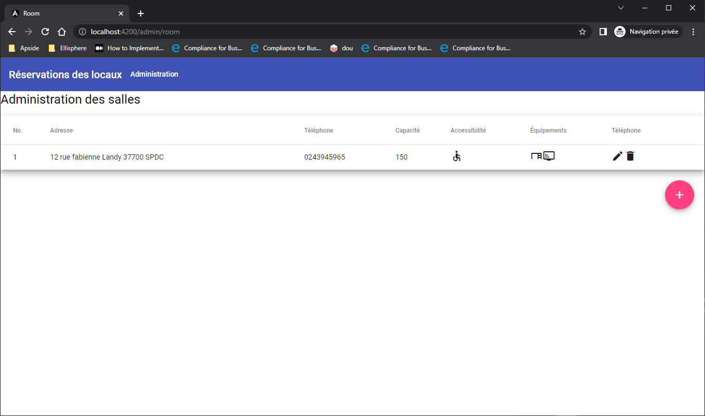

L'objectif de ce Codelabs est de pratiquer le framework Angular pour voir si vous avez acquis les bases de développement.
Vous pouvez partager avec un Tech Lead votre avancée sur le sujet via un repo GIT.
Il est demandé au cours de ce TP d'utiliser toute les bonnes pratiques vu lors de la formation initiale Angular.
- Création du projet à l'aide d'angular cli
- Migrer les tests unitaires pour la librairie jest
- Ajouter la librairie material
- Mise à jour du projet généré pour utiliser les standalones components (Optional)
- Procédé à l'affichage d'une navbar material et d'un titre
- Vérifier que les tests sont ok
- Création du CRUD "local" pour la gestion des salles pour une future interface d'administration:
- La suppression doit demander une validation de l'action, puis recharger la liste en cas de suppression
- Suite à l'action de mise à jour ou de création, on retourne sur la liste des salles.
- La gestion des salles est faite de façon à pouvoir brancher une API par la suite.
Object room ->
{
id -> int
capacity -> int
accessibility -> boolean
equipments: [
TABLE,
VISIO
],
address: string,
telephone: string
}
Voici un exemple des écrans attendus :
La liste des salles : 
Création d'une salle : 
Mise à jour d'une salle : 
- Récupérer le backend
- Lancer le backend en mode non sécurisé :
- Ouvrir un terminal
- Ce positionner dans le dossier du backend
- npm install
- npm run start:no-auth
- Votre backend est disponible à l'adresse http://localhost:3000
- Mise à jour du CRUD pour se connecter à un backend non sécurisé.
- Lancement du backend sécurisé :
- Ouvrir un terminal
- Ce positionner dans le dossier du backend
- npm install (si ce n'est pas déjà fait)
- npm start
- Votre backend est disponible à l'adresse http://localhost:3000
- Création d'une page de login.
- Création du service d'authentification.
- Sécurisation de l'appel au CRUD déjà fait dans le chapitre 2.
- Message d'erreur et redirection vers la page de login en cas d'erreur d'authentification.
- Ajouter des tests automatisers Cypress ou Playwright
Vous avez mis en place :
- Une application Angular
- Un service CRUD
- Des composants materials
- Plusieurs formulaires
- Du routing
- Un service de connexion
- Un guard d'authentification
- Un Http Filter
- Des tests cypress/Playwright + jest
Bravo, vous êtes prêt pour la formation avancée proposée par Apside TOP.